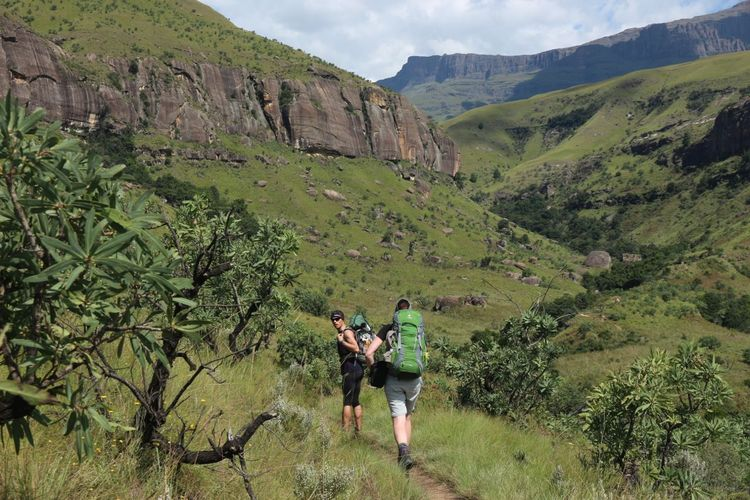
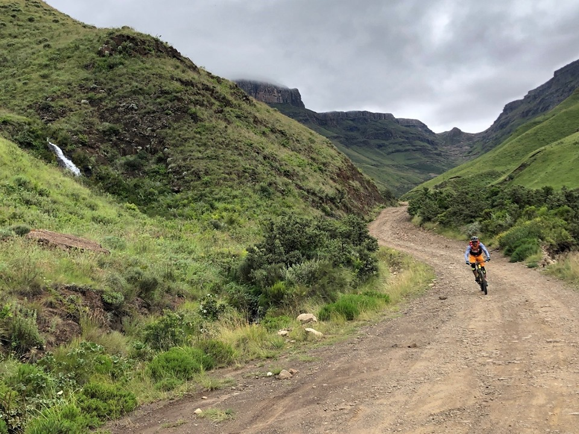

×

Expedice Jih Afriky - Hory
Zejména v Jihoafrické republice si milovníci horských túr přijdou na své. Většina atraktivních lokalit má značené turistické cesty a alespoň minimální infrastrukturu, které řeší začátek a konec několikadenních tras. Dračí hory jsou tak rozlehlé, že k jejich objevování budete potřebovat několik návštěv. Další destinace jsou v oblasti Kapska. Jsou i místa pro lezení s lanem nebo bouldering. Několik expedic jsme dělali i pro nadšence horských kol.
Klikni a podívej se na video!
